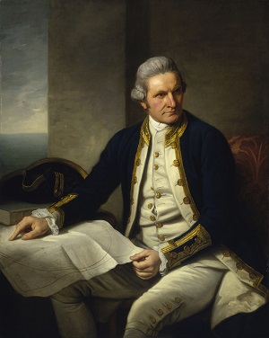

U 18. st pomorci su tragali za pretpostavljanim južnim kontinentom. Na kraju jenjegovo postojanje utvrdio engleski istraživaè James Cook - otkrivaè Australije (1772.-1775.)Australija je bila zemlja rijetko naseljena Aboridžinima (kako su ih nazvali Europljani) -domaæe stanovništvo. Ispoèetka je Australija služila kao kažnjenièka kolonija. Prema ministru unutarnjih poslova jedna je kolonija nazvana Sydney. Unosnim posjedom Australija je postala tek uranom 19.st. kada su se onamo doselili poljoprivredni poduzetnici. Oni su se bavili uzgojem ovaca i goveda te stvorili èvrste preduvjete za egzistenciju pa je tako peti kontinent postao privlaèan za nove doseljenike i s vremenom se je pretvorio u „bijeli kontinent“.
James Cook 1773. godine otkrio je Tahiti. U vrijeme Cookova posjeta Tahitiju tu je živjelo oko 100 000 ljudi, a poèetkom 19.st samo oko 6 000. Veæina ih je stradala od tifusa, velikih boginja, bolesti koje su otokom širili Europljani. Cook je ubijen na Havajima. Mornari su optužili domorodce za kraðu èamca, pa su na vrlo grub naèin tražili njihov povrat. U gužvi koja je nastala Cook je proboden kopljem.